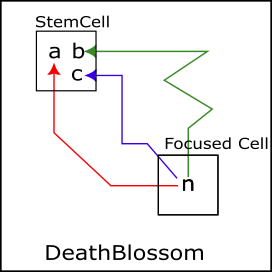
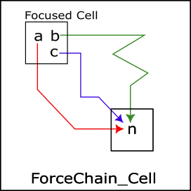

eNetwork Analysis Algorithm
Various Sudoku analysis algorithms can be created
by replacing conventional links (inter-cell links, intra-cell links, ALS links) with eNetwork.
Also, by separating the network exploration, each algorithm can focus on its own processing.
In addition, by specializing in network search,
Even if the types of links are expanded, there will be no/minimal changes to the respective Sudoku analysis algorithms.
(1) NiceLoop
Expand the link types and replace the link string connecting the origin nodes with eNetwork and develop it into eNetwork_NiceLoop. The obtained NiceLoop is the same, but by separating the network search, The NiceLoop code consists of preparation, determining loop formation, and summarizing the results.
(2) eNW_DeathBlossom(eNetwork_DeathBlossom)
DeathBlossom evolves into eNetwork_DeathBlossom.
XYZ-Wing => DeathBlossom => ALS Death Blossom => eNetwork_DeathBlossom
DeathBlossom is an algorithm that connects Stem cells and other cells/numbers using links or ALS.
Replacing the linking situation with an eNetwork is a natural extension.
Note that eNW_DeathBlossom and Force_Chain_Cell are algorithms with symmetric state attributes and network directions.


(3) ForceChain(ForceChain_Cell, ForceChain_House, ForceChain_Contradiction)
The ForceChain-based algorithm is the second phase of radial network search, selection and confirmation processing, and summary of the results. ForceChain_Contradiction is when the state of the end node is "affirmative and negative"